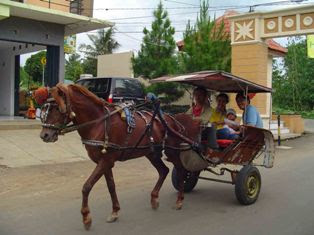

Daftar Lagu Anak-Anak
Balonku
Bintangkecil
Burung kakatua
Burung kutilang
cicak-cicak di dinding
Kasih Ibu
kebunku
Kupu-Kupu
Layang-Layang
Naik Becak
Naik Delman
Naik Gunung
Naik Keretaapi
Nina Bobo
Pelangi
Balonku
Balonku ada lima
Rupa-rupa warnanya
hijau, kuning, kelabu
Merah muda dan biru
Meletus balon hijau DOR
Hatiku sangat kacau
Balonku tinggal empat
Kupegang erat-erat
Back
Bintang kecil
Bintang kecil, di langit yang tinggi
Amat banyak, menghias angkasa
Aku ingin, terbang dan menari
jauh tinggi ke tempat kau berada
Back
Burung kakatua

Burung kakaktua
hinggap di jendela
nenek sudah tua
giginya tinggal dua
Trek-dung ... trek-dung ...
Trek-dung tra-la-la
Trek-dung ... trek-dung ...
Trek-dung tra-la-la
Trek-dung ... trek-dung ...
Trek-dung tra-la-la
burung kakatua
Back
Burung kutilang

dipucuk pohon cemara
burung kutilang berbunyi
bersiul, siul sepanjang hari
dengan tak jemu jemu
mengangguk angguk sambil berseru
trilili lili lilili
sambil berlompat lompatan
paruhnya slalu terbuka
digeleng gelengkan kepalanya
menentang langit biru
tandanya suka ia berseru
trilili lili lilili
Back
cicak-cicak di dinding

cicak-cicak di dinding
diam diam merayap
datang seekor nyamuk
hap ... lalu ditangkap
Back
Kasih ibu

Kasih ibu,
kepada beta
tak terhingga sepanjang masa
Hanya memberi,
tak harap kembali,
Bagai sang surya, menyinari dunia.
Back
Kebunku

Lihat kebunku
penuh dengan bunga
ada yang putih,
dan ada yang merah
setiap hari
kusiram semua
mawar melati,
semuanya indah!
Back
Kupu-Kupu
Kupu-kupu yang lucu
kemana engkau terbang
hilir mudik mencari
bunga-bunga yang kembang
berayun ayun
pada tangkai yang lemah
tidakkah sayapmu
merasa lelah
kupu-kupu yang elok
bolehkah saya serta
mencium bunga-bunga
yang semerbak baunya
sambil bersenda
semua kauhampiri
bolehkah kuturut
bersama pergi
Back
layang-layang
Kuambil buluh sebatang
Kupotong sama panjang
Kuraut dan kutimbang dengan benang
Kujadikan layang-layang
Bermain berlari
Bermain layang-layang
Berlari kubawa ke tanah lapang
Hatiku riang dan senang
Back
Naik Becak

saya mau tamasya
berkeliling keliling kota
hendak melihat-lihat keramaian yang ada
saya panggilkan becak
kereta tak berkuda
becak, becak, tolong bawa saya
saya duduk sendiri sambil mengangkat kaki
melihat dengan aksi
ke kanan dan ke kiri
lihat becakku lari
bagai takkan berhenti
becak, becak, jalan hati-hati
Back
Naik Delman

Pada Hari Minggu kuturut ayah ke kota
naik delman istimewa kududuk di muka
Kududuk di samping pak kusir yang sedang bekerja
mengendalikan kuda supaya baik jalanya, Hei!
tuk tik tak tik tuk tik tak tik tuk tik tak tik tuk
tuk tik tak tik tuk tik tak suara sepatu kuda
Back
Naik Gunung

Naik - naik, ke puncak gunung
tinggi - tinggi sekali
Naik - naik, ke puncak gunung
tinggi - tinggi sekali
Kiri - kanan kulihat saja
banyak pohon cemara
Kiri - kanan kulihat saja
banyak pohon cemara
Back
Naik Keretaapi

Naik kereta api ... tut ... tut ... tut
Siapa hendak turut
Ke Bandung ... Surabaya
Bolehlah naik dengan percuma
Ayo kawanku lekas naik
Keretaku tak berhenti lama
Lekas kretaku jalan ...tut...tut...tut
Banyak penumpang turut
K'retaku sudah penat
Karena beban terlalu berat
Di sinilah ada stasiun
Penumpang semua turun
Back
Nina Bobo

Nina bobo oh nina bobo
Kalau tidak bobo digigit nyamuk
Nina bobo oh nina bobo
Kalau tidak bobo digigit nyamuk
Bobo lah bobo anakku sayang...
Kalau tidak bobo digigit nyamuk
Nina bobo oh nina bobo
Kalau tidak bobo digigit nyamuk
Back
Pelangi
Pelangi pelangi
alangkah indahmu
Merah, kuning, hijau
di langit yang biru
Pelukismu Agung, siapa gerangan
Pelangi, pelangi, ciptaan Tuhan!
Back